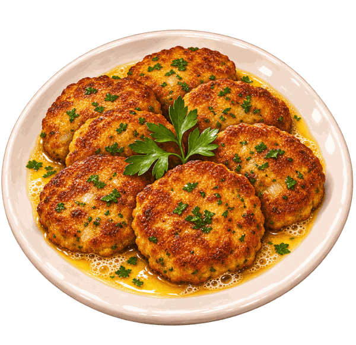

No recipe found.
Firenze · Journey city


Bologna · Journey city


Venezia · Journey city


Trieste · Journey city


Trento · Journey city


Milano · Journey city

Panettone1 h 50 min · Hard

Cremona nougat1 h 40 min · Hard

Pumpkin tortelli1 h 50 min · Medium

Boiled meats with mostarda3 h 20 min · Easy

Risotto alla milanese (saffron risotto)35 min · Medium

Cotoletta alla milanese (breaded veal chop)30 min · Easy

Ossobuco with gremolada1 h 55 min · Medium

Cassoeula (pork and savoy cabbage stew)3 h 10 min · Medium

Minestrone alla milanese (vegetable soup with rice)1 h 50 min · Easy

Mondeghili (Milanese meatballs)28 min · Easy
Gubbio · Tavolata festivals


Modena · Tavolata festivals

Napoli · Tavolata festivals


Urbania · Tavolata festivals


Verona · Tavolata festivals


Cook this recipe in Tavolata too
In the game you match ingredients, complete orders and restore Italian cities, from Firenze to Milano. Free, with real recipes in the Cookbook.
Download on the App Store